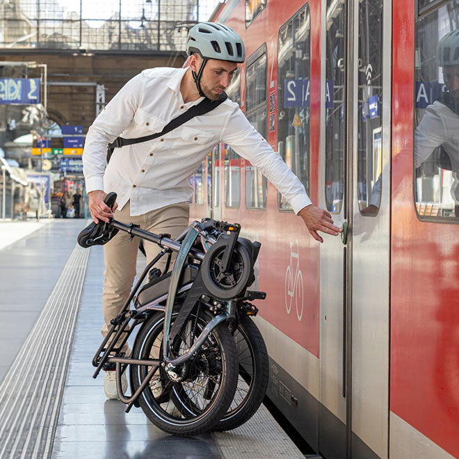
Estilo único
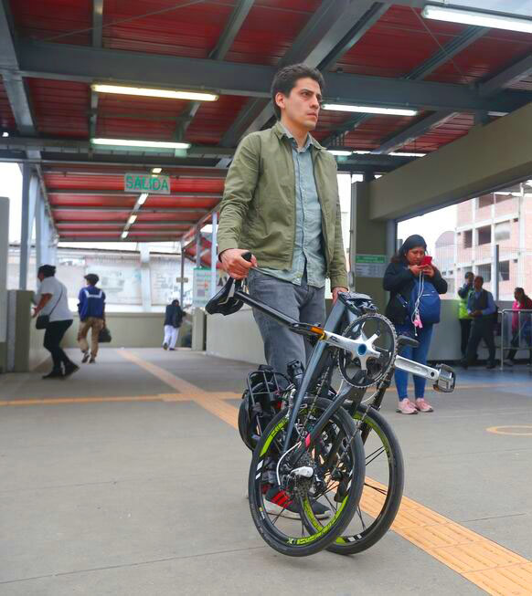
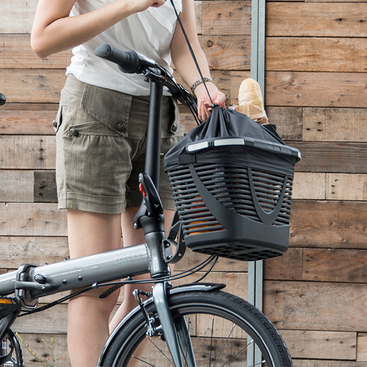
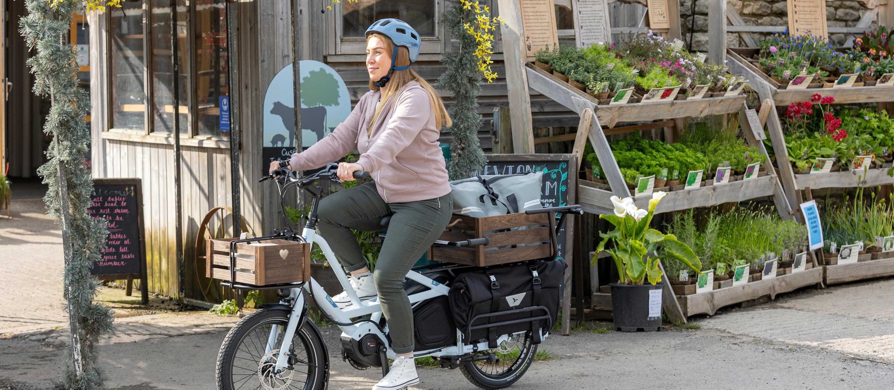
Link B7
La Tern Link B7 está pensada para quienes buscan movilidad práctica y versátil. Se pliega en solo 10 segundos, permitiendo transportarla fácilmente en subte, coche o tren. Su cambio de 7 velocidades, manubrio ajustable y compatibilidad con portaequipajes la convierten en una bicicleta ideal para explorar la ciudad con comodidad y estilo.
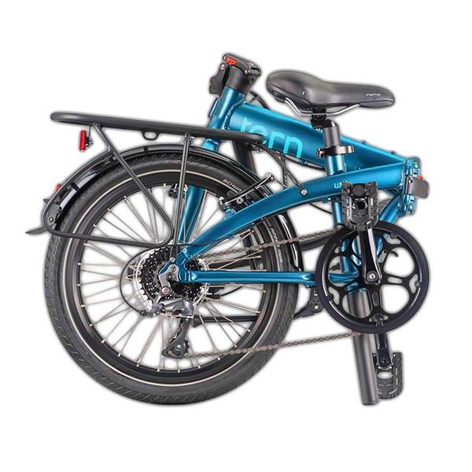
Plegado fácil
Diseño compacto
7 cambios
Plegala en segundos, disfrutala en cualquier lugar.
Características
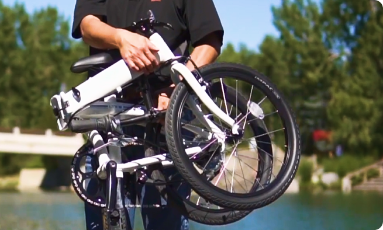
Plegado rápido en 10 segundos
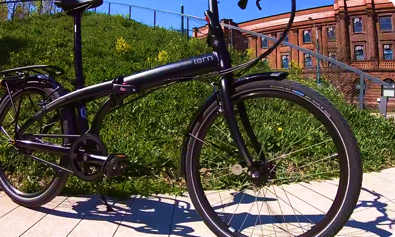
Cuadro de aluminio ligero
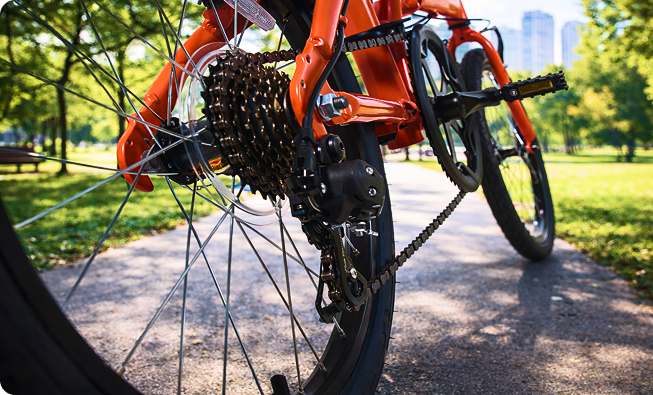
Transmisión de 7 velocidades
¿Cómo se pliega?
1
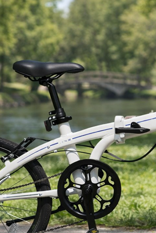
Bajar el manubrio y asiento.
2
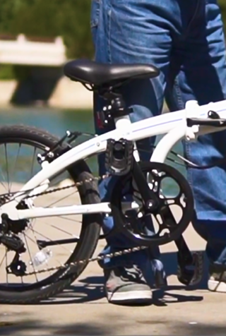
Plegar los pedales.
3
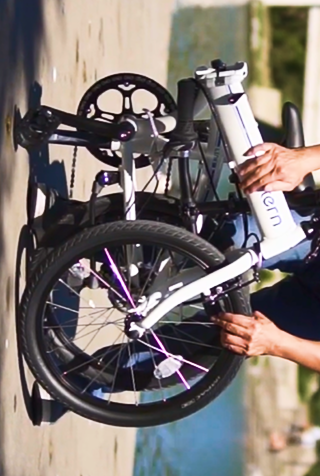
Doblar el cuadro por la bisagra central.
4
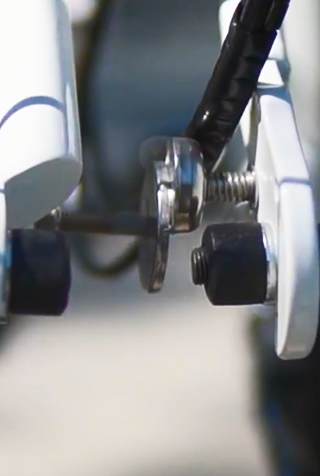
Asegurar con el imán.
Compacta, ágil, lista para tu próxima aventura.
Partes de su peculiaridad
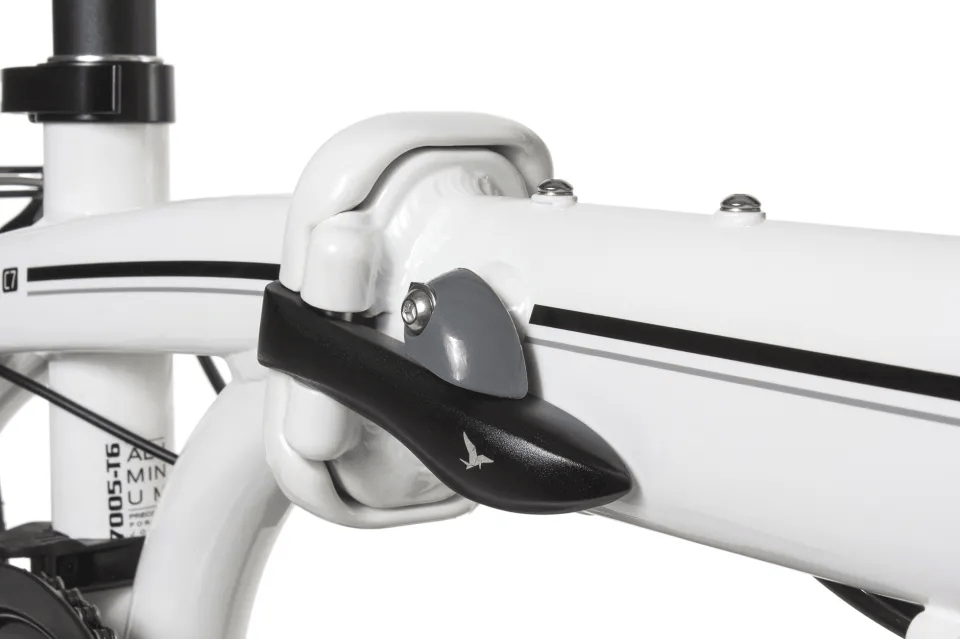
Junta de cuadro FBL 2
Es fuerte, segura, y gracias a los cojines integrados, siempre es fácil de utilizar.
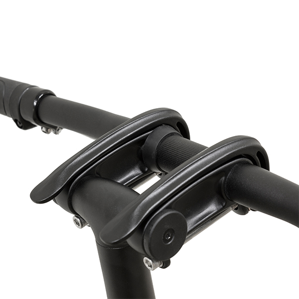
Tecnología DoubleTruss
La parte trasera de los cuadros brindan una solidez extrema. Ayuda a resistir las fuerzas de torsión por lo que tu bici no se doblará.

Telescopic Handlepost
Brinda la opción de manejar más arriba para mayor confort, o más abajo para más aerodinámica.